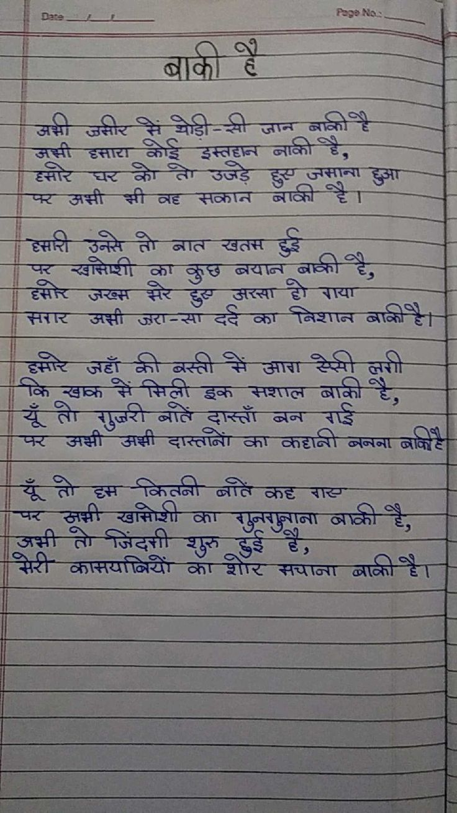

File: hin_sample_18.jpg

⏳ Pending Integration...
बाकी है अभी जमीर में थोड़ी-सी जान बाकी है अभी हमारा कोई इम्तहान बाकी है, हमार घर को तो उजड़े हुए जमाना हुआ पर अभी भी वह मकान बाकी है। हमारी उनसे तो बात खत्म हुई पर खामोशी का कुछ बयान बाकी है, हमार जख्म मेरे हुए अरसा हो गया मगर अभी जरा-सा दर्द का निशान बाकी है। हमार जहाँ की बस्ती में आग ऐसी लगी कि राख में मिली इक मशाल बाकी है, यूँ तो गुजरी बातें दास्ताँ बन गई पर अभी अभी दास्तानों का कहानी बनना बाकी है। यूँ तो हम कितनी बातें कह गए पर अभी खामोशी का गुनगुनाना बाकी है, अभी तो जिंदगी शुरू हुई है, मेरी कामयाबियों का शोर मचाना बाकी है।
Date ___________ Page No.: ___________ ## बाकी है अभी उसीर में थोड़ी-सी जान बाकी है जमी हमारा कोई इस्तहान नाकी है, हसारे घर को तो उजड़े हुए जमाना हुआ पर अभी भी वह सकान बाकी है। हमारी उनसे तो बात खतम हुई पर खामोशी का कुछ बयान बाकी है, हमोर जख्म मेरे हुए अरसा हो गया सगर अभी जरा-सा दर्द का निशान बाकी है। हमारे जहाँ की बस्ती में आग ऐसी लगी कि खाक में मिली इक मशाल बाकी है, यूँ तो गुजरी बातें दास्ताँ बन गई पर अभी अझी दास्तान का कहानी बनना बाकी है यूँ तो हम कितनी बातें कह गए पर अभी खामोशी का गुनगुनाना बाकी है, अभी तो जिंदगी शुरु हुई है, मेरी कामयाबियों का शोर सचाना बाकी है।
|| 53 ey / 7 Page Na: | ; QO : 3 | © की 6६ = ar : i j wets eS) | Tp ES Si ST SSS Se STATA E - eed ne ae जन्म | ee Sa SSE EST L i - : aR Qi EN : ES ace = खठस Ss | < ES AW aT an AMS SS = na — =—— 3s es Ser ars 2 ॥ खाक्क SS So ee k ee — =f ae if Ss; we ५ : : = = ८५ C\ i; a ae | न Sh ae लता एप हर जा ee Seas [जराज्मान्ग oth हे Ao कायप्कियो- का Fhe aie ET] oni | पयाज्य ata Se eee ae LS a ; १७४९३ 2: os as = oe ie ———
ww A Oe हट १ caf Tal Urry 6 A हा, Phe tate Se So ab heat SET ow Te age GbE ees Bs yh re ea बट Ds ee जाए area tr RRC a GON के. 787 85:22 eR in मई लगन AO ba a दि NACE LE 7 ELT oa 2:40 ES Tie Se rene SER ES eS | fe ST Se en ee ei ee a Be Le ar ee २०८००: 8 REE 7८ ie aN te Ste be vin aren St hee ee - 25207 — —! SS nO ee Py Pe ee 0] ta pe Pe न | [girth OMT o BOSLRETE ROTC LE CCN LRT) an CURLY GS \ RD SC EET Ene Fe | हि re ec er OM yee ene SE ४ 2४.०८... ea ea Sa, SB nee BSS ० २०७०० ०... oe SU se ta Ong 32220) Sant SS a ner PL SI le लि स्निद्लि यमन मप्र हल ees & Free eae he Ley hy nes sree Pepe का कल etek Det nat | REE? 2 ree St ae Lesa 7 rat lf Pe 5 ae AD ke Da NSS ee a ei Oy telco ie A SS SURE TRUER pe एल कसर a Stapp See OR Vn Se df UE a EE 2 ETE a गम i न नल 7777 सन 3455 ८५ TF a a ee wee ee be ket ST जतज्जी ‘ n 2७७ OD) PB eek eee ZN Re 4 Tey ey ! be | 68... RE + Be RRS 65%: a CERO se Te Ae 2532 CW ACE SEO (50 ८५२१ न्प्प Te eo EES = = TE aac re. == ar PA CUI Ee शा o> ASSMAN E SSO SARS Ree Sein ee eh ea ese rc * ne SLs wk nels te a RON. 3 ०५-7० ee EN eee pS =e Sel ieee नस Te SCI EIEN 8 CORBIS SET Po ES “Ta FESSASAMS TSEC ORS RRL ries OSE A टी 5 00250 as et ak oN end NR a SN ee nee नस Be Sab Tice a Ah Goat G Aap t) peel Ree FERN Nr FNS सच meri bi | | DARREL bin bates ah an cea eal OE ea PRY) wae oa 0000 वि की ४ Min. Da Se ts ne te ee ८7:00. ८: 22274 जब fe जलाना Po Lp aL OES elo lan OU ७ OT ee 7 I Teng Siete) Me NESES opReg OE ee oe न 77: hee er a ee De कपल लससस5 = नस aL aa fT BEE aE STREETS 700 Da REE RON bore i H Fe gee Ske nS भला थक EY 5 voy eh wh, BA Si en ८77 ८ CO 75: Lee try ee mo EGY ON IOAN ६००८६, ee ee oe Sh ae ath. air जे rs MIOVIC HSI Cee: Sone Gir Maan RSET Corea ne पट 5 (CUE ON LGU CUE ROE ES 5... eran fy ae serie) MTS Raga 0000 :20 40492: SAE oy हु s Mas ite gE ee LOSE. HORSE aye "lit ncn ere ee 2 शव a ES 2 Ws Went i. aay ee tee => OOF EG eeT ~ Pame 9०3 live, = ४०५४: ० antdh Saray, है बट, ae) 7५०५. प्स्ण्त- की पिया ‘sed IStee lhe OLE te 2222 पद Soe Dt} eran t 4 ae sad Ue ON el et JON 20:20: ४० २००० ON i ee Ee et. AR HSN EER PEs te 527: Ree Os.) PA Oe ८ res प्र हे Al: 434७7 52249 0 S Qe Rieter NS yee ts ew ०५००८. ०८६. Rae I EO 8205 57:१५ .२००: ॥।: Sey ae a NP उन oo Got r AY POA INS eh: Trea SALE RC HR GEE NS ४०४३ SSN Ta aed Bd fe PAR ता पिन मिट SY AES RTE SS SS ee ee a ah a es ee 20 Se ५: ३८. 3 Ie 22% or Oe TOOT व oy | ance a Paces ० चर [ome TLE eee RR ET ee Sd ACN oe २८६६६ ८७... EN ONE 25५ 28605 NE SA atiae 2 ha Seen Te xo पा 7१ Tad aN ए SST ON ey BR 42 422: ५ लय आय तन सम tes Sa S02 See my fo ili ee ०८००-८7: LON TONE OGNG ewe cl CON \ESEZARU ai te aOR) aed eh ae aitlot GS oh ee blo al oh 7 ee a | DON AS Re ACO REN, CAE eo Sap «बा AEM. He AON i ८०१ SORES ००००० ००८०5 EONS OE =H a EON TEN ae Rates, cy Set SAL top अत एस काका Sra a) Fe SEARS ALLE. HERMITE CONN GY ८७४७० ? गा FA >} ा ० डा 2 PP RSE ORES RUA PR EO CRT कलश TE AAS or ७ oN REN ns «NE ONCE Noe net ee NT Rees SAS SS ee RMN Pach x Atimolsntoltigtiqn ef: gp, “Sere, Ree 04022 किट Se aan ine ene | SoU 04 ६; SUL en i ca ee ant ee tp d eee ाएाकिओििक थामा एए; 2 RR यान RR ee पं teers कर... ता नह है 8 sade SH ON sn, A BISONS eo er ay Eien direst aloha ly Gh Gs Ch ee SiGe rape Wess गज का तह. मा नम मिला यह: Ub ean (NV re OO GN, ae .॥ ibe Stet ees ly tg SRT Cone lich istinl=ohic Feet yen) 4 किक RET? — SSUES SARS UGS BACON ON NOD हा enna! ie व 70 ४5 ८ 2 > न te) 7707 १२०52 87० ROTOR tk RR Fo fis watt (NEON EE 25:20 ० 702 CERN ERIS NO a CR ६६०२ EO ० x(t." 8 Gad Tey Te x a2 छा qo he hr avai sens Ore Pa Pe :॥ 2९ fe Lazer ty 9 beaten a 7 7 eee ४» a AGS मिथ 440 पट : See अस्त: NSE AE Sad 4025: (00% FRA a LONE Es, adits CEU eet Pa tae BUR 80 tay Shits — — प्र: 7 (|) ४ (9 «>>: ० एट th ONL SOLO a4 Thi bane tc ; ॥ on SOAS MENGE . Saale 97325 «0१:७१ जज ROMO ES Vd Rg pb an ns 77८2० ० 7 00000 2:20 72:20 2.2 Se ee कि TEE GE OS STREET NE POE GG gg फल मक्का of Poe tte Far Tea Cos co PC LCase EEO एज Bo पिन नि a ee ee भिन्न Ta ee gy Be OE ET PIE ATT ET SE WR SS ET पद कमी पाक | ये डर oe Phas tee ot Pe ae te TREE 8 Pts गा Sa ee ae . OTE HEL oe SESE aT Pa te fn i At ee 2 7.0. ५.४: tie Be Seg Eee BS dae a are Pap ea T ae (AE ne OT £3 Been ioe aes Sk A ee Soa a Ry SE RI MOT pet fee 5 Bin ON SB ae eg, ०. ८. eee! ts Fu aN rr cere ee eT eT रो ey eh a आय Pg भय TESS TEE RIES ee fave fos} Fa ie ४ 25. 27, «5 ४६. ०. LS 5, ा my ON TAD nee ee Sa eh Hy is itn ado roe ० ४०००० Sil a Ee a yo a 2०2 a Re eee pe en EE EE Earn at a SESE TET, TA Ea epee रन = FESS PEE ie REBELS EGS se TE पर SNE 7०227 ee ee oe eed t Teepe be es SEEDS aE RIE PREIS Og POE LE PURO सफलता HT ee Pe 7 | हाय कद oS 2 कि पट, 7 TG OMT toes पट Ol गज पिच इज EES Gh tata Se BOT EN tata a ESO AMRIT पंप: 55 es Ee Deh a eee य50382042: 22,007: 2007८ Bes ci cole 4 सत्ड्तताउल्सलससस जल Taneed vae IU OTe rE SR eee corre cern awe Tee tae दि: गज चाकू लक DTI AS ऋचा यम Fe Fmt hala Sarasa eee LE OI Veh ea Se Oped Tash Saat 25507: Peters nde १००३ Ue a a eye ae i eS e Se PE मम SST Sn SRE ET TE ING SOE TOG Fee gw ee 5) eat te TT ms REIMER cate i in RaQ a Ce Br nN oO ORD may ETE RE CLE By 6.० ४7: जा अत es AT SSE abe SN es Sen a Stine cele Secs WEE 2.2 2:72: Hae eR “०५402 SS ath EL Ue 2: 2: टन Be inane OTE gD SE ene oe CEN TANS TR yO Po POEM EAE DESEO फट TEL ae ४4 Pe FRC aR CCB ORG ar Oy CNET TELE BASLE S OtCEE RRMA CRE REDE Eo Ts ice Un RIES CC eae! Be
जसीर नाका अश जान जसी नाका दतारा कड उजड नाकी ^ै अशी सक्ान = दृसारी खतस उनस नात रसिप्शी का स२ कछ दा सरसा जख्स ड अशी सरार का दमार के इक सशाल यूँ ते रुजरी नन अशी का यूँ कितना दस कदृ पर का ूननाूनाना अशी डइ सरी कासयनियें का शार नाका
❌ OCR Failed
ॲप्ला
अकछ रहशशि घर बाफी। ई डीपे ४ड दु्न ख हँ र्ईगा ख्डंगइ वुन पीड़ी-सी जरन्ल प्राइटे जभ्ी हुडएह बयााइइ इूछाहादाइ नाकीईे छह ऊह हजान्ह ङए छल्ह को ला शबडं ग छनपियाजिशं हुअा बुह अमी भीी ब््राह दधयरकय इ्राकय हु ईजिणडी गनुइय रोर बाद गुड़नएंन ड़न बुठ् दुडानाशगे वेवर कुऽ ब्वुरे ब्ाइयो हुजुठ अ-टडनी शुनुट्ट दुष छइ हो शान्या हैनह असुी उहादुाईय दर्द डागा निष्ठान बानय्यमे १शरी हुनाढ़ खोह को बस्ती दे अगता डिसी वि नबुाया मिं गुनदो बधय गाइन व्राबये । छ रि य् ल़ग गुह छप लुगी द्वकैँ करौ-खनी बांति दुानुवा छुघी बाह ई १ हेँ रबी दुगकवजए श्रा बपाहाब्र ह्ज़रीजठ जजिेंडी बै्री डड छ् ति छइत एडीयअिफिग अयल बैगड़ दानछरा रड ड अक ई व्ड लुमी छडाननशुग ब्ठा अभ्मी ता जिंदश्री ज््ामुय कीदे छुछुु्डूना पैधूरँ हई शुक ४ध निरी कमषगलिट्योर छग ईैडानीसठ दैँैश्धिताठ ब्डाजििय ईज् छाए
ररर अशरी जीर ग थॉडी जान बाकी बाको ह जतो हता को कोड त इक्तहान उजे ५ नार्की ह फ़अी अ्ती पट भ टह मकान नाकी जमाना हे प हरी उनते गो नात खतम ह बाकी ह हत प शतिशी क काबुधबचान असा बपान टो गाया जर्त अश्रो ज़ए-सादर्दका ग ड विशानबाकीही निशान बाकीह माार हाटे जहांँ कीबस्ती क बत्ती मेंँआग तँ आव केसी स्सीलगी लगी पूँती किणक र गुजरीबातें गुबरी त मिलीइक मिली इक दाास्ताँ मशाल बाकीहे बाकी गइ अथो अ्ी दास्तानों का बन कहानी बनना चूँतीहम पूँती ह कितनी बरतिकह श श्रश्ी थर जथी खमोशी क बुनगनानाबाकी गुनगुनाना बाकी ह मेरी कामपाबियों तो जिंदगी कॉशॉर शूर ॾ मचाना बाकीह क